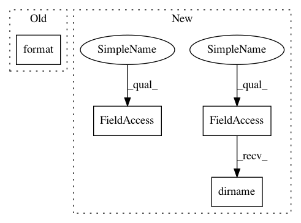

164b392ce45a1baa7523212c451fa3d20cb06450,setup.py,,main,#,64
Before Change
log("Installing Microsoft Visual C++ Compiler")
vcSetupPath = os.path.join(setupHome, "VCForPython.msi")
locateFile(vcURL, vcSetupPath)
c = "msiexec /i {0} /qb".format(vcSetupPath)
log("Executing: {0}".format(c))
subprocess.call(["msiexec", "/i", vcSetupPath, "/qb"])
log("C++ Compiler for Python installed successfully")
After Change
pipExePath = os.path.join(os.path.dirname(sys.executable), r"Scripts\pip.exe")
setupHome = os.path.join(os.path.abspath(os.path.dirname(__file__)), "scripts")
distHome = os.path.join(os.path.abspath(os.path.dirname(__file__)), "dist")
try:
arcpy = __import__("arcpy")
info = arcpy.GetInstallInfo()
if tuple(map(int, (info["Version"].split(".")))) < tuple(map(int, ("10.3.1".split(".")))):
raise Exception("No ArcGIS")
except:
die("Unable to find ArcGIS 10.3.1 or above. Cannot proceed.", 99)
try:
log("Installing PIP")
pipPyPath = os.path.join(setupHome, "get-pip.py")
locateFile(pipURL, pipPyPath)
subprocess.call([sys.executable, pipPyPath])
if os.path.isfile(pipExePath):
log("PIP installed successfully")
else:
raise Exception("PIP failed")
subprocess.call([pipExePath, "install", "--upgrade", "pip"])
subprocess.call([pipExePath, "install", "--upgrade", "wheel"])
except:
die("PIP installation failed!", 1)
try:
if sys.version_info[0] == 2:
log("Installing Microsoft Visual C++ Compiler")
vcSetupPath = os.path.join(distHome, "VCForPython27.msi")
locateFile(vcURL, vcSetupPath)
c = ["msiexec", "/i", vcSetupPath, "/qb-"]
log("Executing: {0}".format(" ".join(c)))
In pattern: SUPERPATTERN
Frequency: 3
Non-data size: 4
Instances
Project Name: Esri/raster-functions
Commit Name: 164b392ce45a1baa7523212c451fa3d20cb06450
Time: 2015-05-21
Author: akferoz@esri.com
File Name: setup.py
Class Name:
Method Name: main
Project Name: Esri/raster-functions
Commit Name: 164b392ce45a1baa7523212c451fa3d20cb06450
Time: 2015-05-21
Author: akferoz@esri.com
File Name: setup.py
Class Name:
Method Name: main
Project Name: xinntao/BasicSR
Commit Name: 23a45d5eb839c763c94c0e413ad599d9f9b5e184
Time: 2018-09-06
Author: wxt1994@126.com
File Name: codes/scripts/create_lmdb.py
Class Name:
Method Name:
Project Name: daavoo/pyntcloud
Commit Name: b1004960919dd1671da86dad6c465d4b6ad69d62
Time: 2017-04-07
Author: daviddelaiglesiacastro@gmail.com
File Name: pyntcloud/plot/points.py
Class Name:
Method Name: plot_points